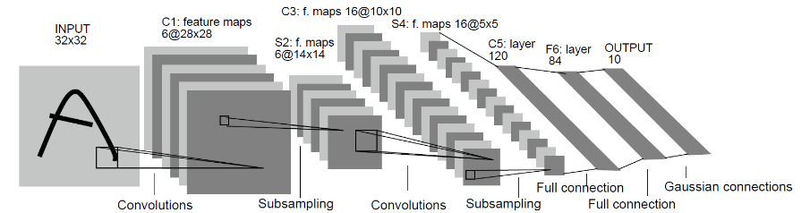

实现一个云云联邦的图像分类应用(x86)

根据参与客户端的类型，联邦学习可分为云云联邦学习（cross-silo）和端云联邦学习（cross-device）。在云云联邦学习场景中，参与联邦学习的客户端是不同的组织（例如，医疗或金融）或地理分布的数据中心，即在多个数据孤岛上训练模型。在端云联邦学习场景中，参与的客户端为大量的移动或物联网设备。本框架将介绍如何在MindSpore云云联邦框架上，使用网络LeNet实现一个图片分类应用。
启动云云联邦的图像分类应用的完整脚本可参考这里。
下载数据集
本示例采用leaf数据集中的联邦学习数据集FEMNIST， 该数据集包含62个不同类别的手写数字和字母（数字0~9、26个小写字母、26个大写字母），图像大小为28 x 28像素，数据集包含3500个用户的手写数字和字母（最多可模拟3500个客户端参与联邦学习），总数据量为805263，平均每个用户包含数据量为226.83，所有用户数据量的方差为88.94。
可参考文档端云联邦学习图像分类数据集处理中步骤1~7获取图片形式的3500个用户数据集3500_client_img。
由于原始3500个用户数据集中每个用户数据量比较少，在云云联邦任务中会收敛太快，无法明显体现云云联邦框架的收敛效果，下面提供一个参考脚本，将指定数量的用户数据集合并为一个用户，以增加参与云云联邦任务的单个用户数据量，更好地模拟云云联邦框架实验。
import os
import shutil
def mkdir(path):
if not os.path.exists(path):
os.mkdir(path)
def combine_users(root_data_path, new_data_path, raw_user_num, new_user_num):
mkdir(new_data_path)
user_list = os.listdir(root_data_path)
num_per_user = int(raw_user_num / new_user_num)
for i in range(new_user_num):
print(
"========================== combine the raw {}~{} users to the new user: dataset_{} ==========================".format(
i * num_per_user, i * num_per_user + num_per_user - 1, i))
new_user = "dataset_" + str(i)
new_user_path = os.path.join(new_data_path, new_user)
mkdir(new_user_path)
for j in range(num_per_user):
index = i * new_user_num + j
user = user_list[index]
user_path = os.path.join(root_data_path, user)
tags = os.listdir(user_path)
print("------------- process the raw user: {} -------------".format(user))
for t in tags:
tag_path = os.path.join(user_path, t)
label_list = os.listdir(tag_path)
new_tag_path = os.path.join(new_user_path, t)
mkdir(new_tag_path)
for label in label_list:
label_path = os.path.join(tag_path, label)
img_list = os.listdir(label_path)
new_label_path = os.path.join(new_tag_path, label)
mkdir(new_label_path)
for img in img_list:
img_path = os.path.join(label_path, img)
new_img_name = user + "_" + img
new_img_path = os.path.join(new_label_path, new_img_name)
shutil.copy(img_path, new_img_path)
if __name__ == "__main__":
root_data_path = "cross_silo_femnist/femnist/3500_clients_img"
new_data_path = "cross_silo_femnist/femnist/35_7_client_img"
raw_user_num = 35
new_user_num = 7
combine_users(root_data_path, new_data_path, raw_user_num, new_user_num)
其中root_data_path为原始3500个用户数据集路径，new_data_path为合并后数据集的路径，raw_user_num指定用于合并的用户数据集总数（需<=3500），new_user_num用于设置将原始数据集合并为多少个用户。如示例代码中将从cross_silo_femnist/femnist/3500_clients_img中选取前35个用户，合并为7个用户数据集后存放在路径cross_silo_femnist/femnist/35_7_client_img（合并后的7个用户，每个用户包含原始的5个用户数据集）。
如下打印代表合并数据集成功：
========================== combine the raw 0~4 users to the new user: dataset_0 ==========================
------------- process the raw user: f1798_42 -------------
------------- process the raw user: f2149_81 -------------
------------- process the raw user: f4046_46 -------------
------------- process the raw user: f1093_13 -------------
------------- process the raw user: f1124_24 -------------
========================== combine the raw 5~9 users to the new user: dataset_1 ==========================
------------- process the raw user: f0586_11 -------------
------------- process the raw user: f0721_31 -------------
------------- process the raw user: f3527_33 -------------
------------- process the raw user: f0146_33 -------------
------------- process the raw user: f1272_09 -------------
========================== combine the raw 10~14 users to the new user: dataset_2 ==========================
------------- process the raw user: f0245_40 -------------
------------- process the raw user: f2363_77 -------------
------------- process the raw user: f3596_19 -------------
------------- process the raw user: f2418_82 -------------
------------- process the raw user: f2288_58 -------------
========================== combine the raw 15~19 users to the new user: dataset_3 ==========================
------------- process the raw user: f2249_75 -------------
------------- process the raw user: f3681_31 -------------
------------- process the raw user: f3766_48 -------------
------------- process the raw user: f0537_35 -------------
------------- process the raw user: f0614_14 -------------
========================== combine the raw 20~24 users to the new user: dataset_4 ==========================
------------- process the raw user: f2302_58 -------------
------------- process the raw user: f3472_19 -------------
------------- process the raw user: f3327_11 -------------
------------- process the raw user: f1892_07 -------------
------------- process the raw user: f3184_11 -------------
========================== combine the raw 25~29 users to the new user: dataset_5 ==========================
------------- process the raw user: f1692_18 -------------
------------- process the raw user: f1473_30 -------------
------------- process the raw user: f0909_04 -------------
------------- process the raw user: f1956_19 -------------
------------- process the raw user: f1234_26 -------------
========================== combine the raw 30~34 users to the new user: dataset_6 ==========================
------------- process the raw user: f0031_02 -------------
------------- process the raw user: f0300_24 -------------
------------- process the raw user: f4064_46 -------------
------------- process the raw user: f2439_77 -------------
------------- process the raw user: f1717_16 -------------
文件夹 cross_silo_femnist/femnist/35_7_client_img目录结构如下：
35_7_client_img # 将FeMnist数据集中35个用户合并为7个客户端数据（各包含5个用户数据）
├── dataset_0 # 客户端0的数据集
│ ├── train # 训练数据集
│ │ ├── 0 # 存放类别0对应的图片数据
│ │ ├── 1 # 存放类别1对应的图片数据
│ │ │ ......
│ │ └── 61 # 存放类别61对应的图片数据
│ └── test # 测试数据集，目录结构同train
│ ......
│
└── dataset_6 # 客户端6的数据集
├── train # 训练数据集
│ ├── 0 # 存放类别0对应的图片数据
│ ├── 1 # 存放类别1对应的图片数据
│ │ ......
│ └── 61 # 存放类别61对应的图片数据
└── test # 测试数据集，目录结构同train
定义网络
我们选择相对简单的LeNet网络。LeNet网络不包括输入层的情况下，共有7层：2个卷积层、2个下采样层（池化层）、3个全连接层。每层都包含不同数量的训练参数，如下图所示：

更多的LeNet网络的介绍不在此赘述，希望详细了解LeNet网络，可以查询http://yann.lecun.com/exdb/lenet/。
本任务使用的网络可参考脚本test_cross_silo_femnist.py。
若想具体了解MindSpore中网络定义流程可参考初学入门。
定义训练过程
本任务使用的训练过程可参考脚本test_cross_silo_femnist.py。
脚本中字典ctx中参数enable_fl用于设置是否启动联邦学习训练流程，为true代表启动联邦学习流程，为false代表启动普通训练流程，其他参数可以根据实际情况进行设置。
启动云云联邦任务
安装MindSpore
包括源码和下载发布版两种方式，支持CPU、GPU硬件平台，根据硬件平台选择安装即可。安装步骤可参考MindSpore安装指南。
目前联邦学习框架只支持Linux环境中部署，cross-silo联邦学习框架需要MindSpore版本号>=1.5.0。
启动任务
参考示例，启动集群。参考示例目录结构如下：
cross_silo_femnist/
├── config.json # 配置文件
├── finish_cross_silo_femnist.py # 关闭云云联邦任务脚本
├── run_cross_silo_femnist_sched.py # 启动云云联邦scheduler脚本
├── run_cross_silo_femnist_server.py # 启动云云联邦server脚本
├── run_cross_silo_femnist_worker.py # 启动云云联邦worker脚本
└── test_cross_silo_femnist.py # 客户端使用的训练脚本
启动Scheduler
run_cross_silo_femnist_sched.py是为用户启动Scheduler而提供的Python脚本，并支持通过argparse传参修改配置。执行指令如下，代表启动本次联邦学习任务的Scheduler，其TCP端口为6667，联邦学习HTTP服务端口为6668，Server数量为4个，集群Scheduler管理端口为11202，--config_file_path用于设置配置文件路径，--dataset_path用于设置数据集绝对路径：python run_cross_silo_femnist_sched.py --scheduler_ip=10.113.216.124 --scheduler_port=6667 --fl_server_port=6668 --server_num=4 --worker_num=7 --scheduler_manage_port=11202 --config_file_path=$PWD/config.json --dataset_path=$PWD/femnist/35_7_client_img
打印如下代表启动成功：
[INFO] PS(631,2b316a813700,python):2021-08-31-19:49:42.784.715 [mindspore/ccsrc/ps/core/communicator/http_request_handler.cc:92] Run] Start http server! [INFO] PS(631,2b3084633a80,python):2021-08-31-19:49:42.796.904 [mindspore/ccsrc/ps/core/scheduler_node.cc:97] Initialize] [Scheduler start]: 2. The node role is:SCHEDULER, the node id is:e4b3c983-6d0c-470b-b487-1a247af97575 create a tcp server. [INFO] PS(631,2b316a411700,python):2021-08-31-19:49:42.796.929 [mindspore/ccsrc/ps/core/scheduler_node.cc:129] operator()] The scheduler node start a tcp server! [INFO] PS(631,2b3084633a80,python):2021-08-31-19:49:42.796.935 [mindspore/ccsrc/ps/core/scheduler_node.cc:410] StartUpdateClusterStateTimer] [Scheduler start]: 3. The scheduler start a heartbeat timer! [INFO] PS(631,2b316a411700,python):2021-08-31-19:49:42.796.979 [mindspore/ccsrc/ps/core/communicator/tcp_server.cc:192] Start] Start tcp server!
启动Server
run_cross_silo_femnist_server.py是为用户启动若干Server而提供的Python脚本，并支持通过argparse传参修改配置。执行指令如下，代表启动本次联邦学习任务的Server，其TCP端口为6667，联邦学习HTTP服务起始端口为6668，Server数量为4个，联邦学习任务正常进行需要的worker数量为7个：python run_cross_silo_femnist_server.py --scheduler_ip=10.113.216.124 --scheduler_port=6667 --fl_server_port=6668 --server_num=4 --worker_num=7 --start_fl_job_threshold=7 --update_model_ratio=1 --fl_iteration_num=20 --start_fl_job_time_window=30000 --update_model_time_window=30000 --config_file_path=$PWD/config.json --dataset_path=$PWD/femnist/35_7_client_img
以上指令等价于启动了4个
Server进程，每个Server的联邦学习服务端口分别为6668、6669、6670和6671，具体实现详见脚本run_cross_silo_femnist_server.py。若只想在单机部署
Scheduler以及Server，只需将scheduler_ip配置项修改为127.0.0.1即可。若想让
Server分布式部署在不同物理节点，可以使用local_server_num参数，代表在本节点需要执行的Server进程数量：# 在节点1启动3个Server进程 python run_cross_silo_femnist_server.py --scheduler_ip={ip_address_node_1} --scheduler_port=6667 --fl_server_port=6668 --server_num=4 --worker_num=7 --start_fl_job_threshold=7 --update_model_ratio=1 --fl_iteration_num=20 --start_fl_job_time_window=30000 --update_model_time_window=30000 --config_file_path=$PWD/config.json --dataset_path=$PWD/femnist/35_7_client_img --local_server_num=3
# 在节点2启动1个Server进程 python run_cross_silo_femnist_server.py --scheduler_ip={ip_address_node_2} --scheduler_port=6667 --fl_server_port=6668 --server_num=4 --worker_num=7 --start_fl_job_threshold=7 --update_model_ratio=1 --fl_iteration_num=20 --start_fl_job_time_window=30000 --update_model_time_window=30000 --config_file_path=$PWD/config.json --dataset_path=$PWD/femnist/35_7_client_img --local_server_num=1
启动Worker
run_cross_silo_femnist_worker.py是为用户启动若干worker而提供的Python脚本，并支持通过argparse传参修改配置。执行指令如下，代表启动本次联邦学习任务的worker，联邦学习任务正常进行需要的worker数量为7个：python run_cross_silo_femnist_worker.py --scheduler_ip=10.113.216.40 --scheduler_port=6667 --fl_server_port=6668 --server_num=4 --worker_num=7 --fl_iteration_num=20 --client_epoch_num=1 --config_file_path=$PWD/config.json --dataset_path=$PWD/femnist/35_7_client_img
当执行以上三个指令之后，进入当前目录下worker_0文件夹，通过指令grep -rn "test acc" *查看worker_0日志，可看到如下类似打印：
local epoch: 0, loss: 3.787421340711655, trian acc: 0.05342741935483871, test acc: 0.075
则说明云云联邦启动成功，worker_0正在训练，其他worker可通过类似方式查看。
以上脚本中参数配置说明请参考API文档。
日志查看
成功启动任务之后，会在当前目录cross_silo_femnist下生成相应日志文件，日志文件目录结构如下：
cross_silo_femnist
├── scheduler
│ └── scheduler.log # 运行scheduler过程中打印日志
├── server_0
│ └── server.log # server_0运行过程中打印日志
├── server_1
│ └── server.log # server_1运行过程中打印日志
├── server_2
│ └── server.log # server_2运行过程中打印日志
├── server_3
│ └── server.log # server_3运行过程中打印日志
├── worker_0
│ ├── ckpt # 存放worker_0在每个联邦学习迭代结束时获取的聚合后的模型ckpt
│ │ ├── 0-fl-ms-bs32-0epoch.ckpt
│ │ ├── 0-fl-ms-bs32-1epoch.ckpt
│ │ │
│ │ │ ......
│ │ │
│ │ └── 0-fl-ms-bs32-19epoch.ckpt
│ └── worker.log # 记录worker_0参与联邦学习任务过程中输出日志
└── worker_1
├── ckpt # 存放worker_1在每个联邦学习迭代结束时获取的聚合后的模型ckpt
│ ├── 1-fl-ms-bs32-0epoch.ckpt
│ ├── 1-fl-ms-bs32-1epoch.ckpt
│ │
│ │ ......
│ │
│ └── 1-fl-ms-bs32-19epoch.ckpt
└── worker.log # 记录worker_1参与联邦学习任务过程中输出日志
关闭任务
若想中途退出，则可用以下指令：
python finish_cross_silo_femnist.py --scheduler_port=6667
或者等待训练任务结束之后集群会自动退出，不需要手动关闭。
实验结果
使用数据：
上面
下载数据集部分生成的35_7_client_img/数据集客户端本地训练epoch数：20
云云联邦学习总迭代数: 20
实验结果（每个迭代聚合后模型在客户端的测试集上精度）
worker_0测试结果：
worker_0/worker.log:7409:local epoch: 0, loss: 3.787421340711655, trian acc: 0.05342741935483871, test acc: 0.075
worker_0/worker.log:14419:local epoch: 1, loss: 3.725699281115686, trian acc: 0.05342741935483871, test acc: 0.075
worker_0/worker.log:21429:local epoch: 2, loss: 3.5285709657335795, trian acc: 0.19556451612903225, test acc: 0.16875
worker_0/worker.log:28439:local epoch: 3, loss: 3.0393165519160608, trian acc: 0.4889112903225806, test acc: 0.4875
worker_0/worker.log:35449:local epoch: 4, loss: 2.575952764115026, trian acc: 0.6854838709677419, test acc: 0.60625
worker_0/worker.log:42459:local epoch: 5, loss: 2.2081101375296512, trian acc: 0.7782258064516129, test acc: 0.6875
worker_0/worker.log:49470:local epoch: 6, loss: 1.9229739431736557, trian acc: 0.8054435483870968, test acc: 0.69375
worker_0/worker.log:56480:local epoch: 7, loss: 1.7005576549999293, trian acc: 0.8296370967741935, test acc: 0.65625
worker_0/worker.log:63490:local epoch: 8, loss: 1.5248727620766704, trian acc: 0.8407258064516129, test acc: 0.6375
worker_0/worker.log:70500:local epoch: 9, loss: 1.3838803705352127, trian acc: 0.8568548387096774, test acc: 0.7
worker_0/worker.log:77510:local epoch: 10, loss: 1.265225578921041, trian acc: 0.8679435483870968, test acc: 0.7125
worker_0/worker.log:84520:local epoch: 11, loss: 1.167484122101638, trian acc: 0.8659274193548387, test acc: 0.70625
worker_0/worker.log:91530:local epoch: 12, loss: 1.082880981700859, trian acc: 0.8770161290322581, test acc: 0.65625
worker_0/worker.log:98540:local epoch: 13, loss: 1.0097520119572772, trian acc: 0.8840725806451613, test acc: 0.64375
worker_0/worker.log:105550:local epoch: 14, loss: 0.9469810053708015, trian acc: 0.9022177419354839, test acc: 0.7
worker_0/worker.log:112560:local epoch: 15, loss: 0.8907848935604703, trian acc: 0.9022177419354839, test acc: 0.6625
worker_0/worker.log:119570:local epoch: 16, loss: 0.8416629644123349, trian acc: 0.9082661290322581, test acc: 0.70625
worker_0/worker.log:126580:local epoch: 17, loss: 0.798475691030866, trian acc: 0.9122983870967742, test acc: 0.70625
worker_0/worker.log:133591:local epoch: 18, loss: 0.7599438544427897, trian acc: 0.9243951612903226, test acc: 0.6875
worker_0/worker.log:140599:local epoch: 19, loss: 0.7250227383907605, trian acc: 0.9294354838709677, test acc: 0.7125
其他客户端的测试结果基本相同，不再一一列出。